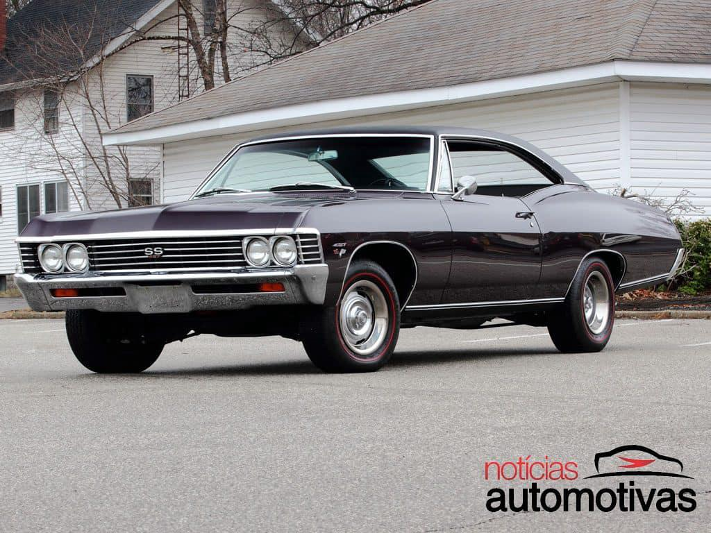
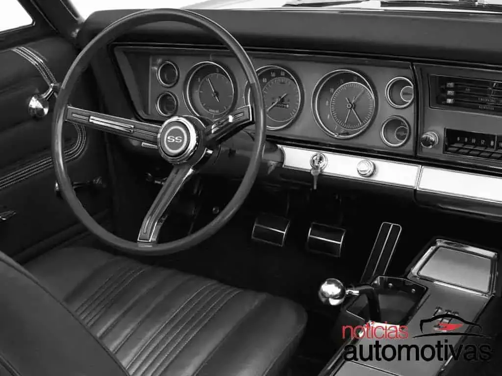

Nessa aba do site terá fotos do carro Chevet, criado pela Chevrolet nos anos 90


O Chevette foi um automóvel lançado pela General Motors no ano de 1973, sendo fabricado pela montadora Chevrolet no Brasil. É a 3 geração do Opel Kadett lançado na Europa em 1973.[1]Foi introduzido inicialmente como um sedan duas portas mantendo como sua principal característica, mas posteriormente também foram oferecidos modelos com 4 portas para exportação (de 1978 a 1987) e versões em hatchback (de 1980 a 1987). O Chevette originou outros modelos derivados como a station wagon Marajó (fabricada de 1980 a 1989) e a pickup Chevy 500 (produzida de 1983 a 1995).
O veículo também ficou conhecido pela sua potência oferecida. Durante toda sua história, o Chevette já veio equipado com vários motores: 1.0 litro (versão Júnior lançado em 1992), 1.4 (carburação simples e dupla, esta somente em 1982 como opcional), 1.6 (carburação simples), 1.6/S (carburação dupla, a partir de 1988, um ano após sua última reestilização) e (1.6/S carburação dupla). Também foram introduzidos motores tanto a gasolina quanto a álcool.
Lançado na década de 70, o Chevette tornou-se um dos mais populares veículos produzidos pela GM no Brasil. Estima-se que até o encerramento de sua produção em 1993, o modelo teria vendido mais de 1,6 milhões de unidades, tendo seu apogeu em vendas entre o fim dos anos 70 e meados da década de 80, quando nestes anos, seus concorrentes diretos saíram de linha em outras montadoras. Foi eleito por duas vezes pela Revista Autoesporte o Carro do Ano em 1974 e em 1981. Em 1983, pela primeira e única vez em sua história, o Chevette foi o carro mais vendido no Brasil.